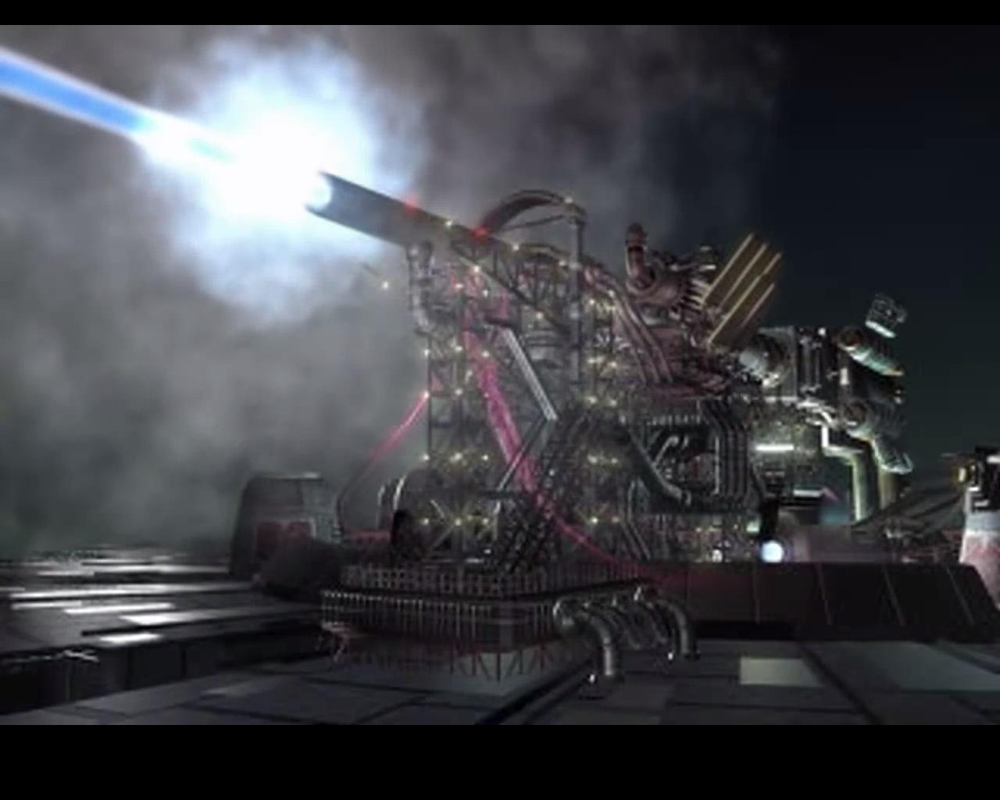
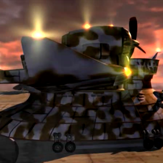
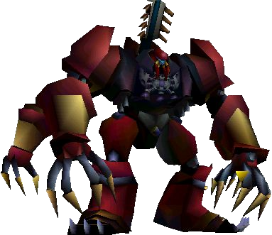

ShinRa Department of Weapons Development
Welcome to the Department of Weapons Development, the oldest branch of the company. We manufacture all the weapons that the company uses in the army. We also research and engineer new weapons using mako technology alongside the science department. Below are some of the most prominent weapons developed throughout the years.
|  |
Sister RayThis massive cannon harnesses the power of huge materia to create a devastating blast capable of defeating even the Ruby Weapon. Originally housed at Junon, the cannon was transported to ShinRa Headquarters in order to take down the barrier at the Northern Cave. |
|
GelnikaAn all purpose plane which ShinRa primarily uses for transport. It can also be used for air fighting and bombing raids, however ShinRa has definitely never used it for these purposes. |
 | |
|  |
Proud ClodThe Proud Clod is a joint project between Ms. Scarlet, the head of weapons development, and Mr. Heidegger, head of public safety. It was designed for destroying the Weapons, and comes with anti-Weapon artillery. It is controlled from an armored cockpit in the chest. |
|